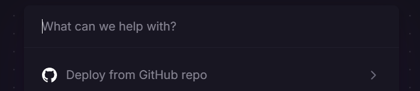
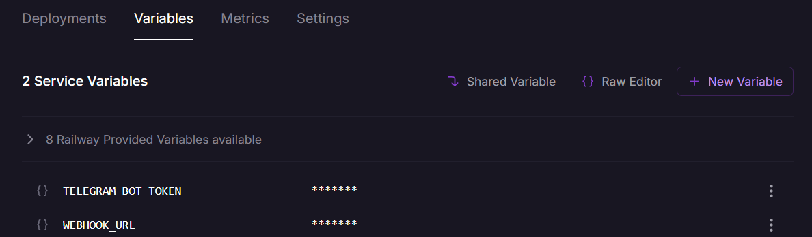
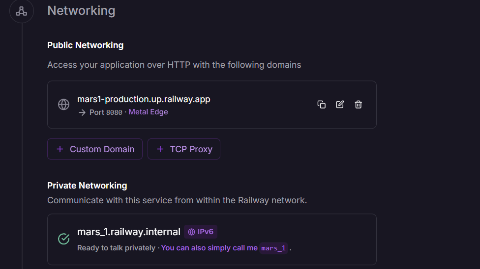
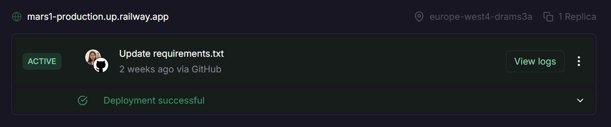

Build and deployment
Railway deployment instructions
The Railway service is used to deploy our project. To repeat the project deployment, you can follow these steps:
-
Register or log in to your Railway account
-
Click to button to deploy new project
- And choose project to deploy from the Github

- Add enviroment variables:

- 4.1 Set your bot token
- 4.2 Set webhook URL. You can find it in Settings -> Networking section

- Deploy project and make adjustments according to the logs 
📦 Manual deployment
-
Clone the repo:
bash git clone https://github.com/swp-team-1/mars_bot_1.5.git cd mars_bot_1.5 -
Create and activate a virtual environment:
bash python3 -m venv venv source venv/bin/activate # On Windows: venv\Scripts\activate -
Install the requirements:
bash pip install -r requirements.txt -
Create an
.envfile (copy from.env.example) and configure:env BOT_TOKEN=your_telegram_bot_token MONGODB_URI=your_mongodb_connection_uri -
Run services:
bash uvicorn main:app --reload # FastAPI backend python bot_main.py # Telegram bot
Continuous Integration
Our project uses two separate CI pipelines: one for the database connector and one for the bot.
Database connector CI
-
CI Workflow:
.github/workflows/test.yml -
Static Analysis and Testing Tools Used:
- pytest: Runs automated tests to verify code correctness.
- flake8: Ensures code style consistency and catches simple errors.
-
bandit: Scans the codebase for security vulnerabilities.
-
Where to See CI Workflow Runs:
You can view all connector CI workflow runs for this project here:
GitHub Actions Runs
Bot CI
-
CI Workflow:
bot_aio/.github/workflows/test.yml -
Static Analysis and Testing Tools Used:
- flake8: Ensures code style consistency and catches both critical and stylistic errors.
- mypy: Checks for type errors and enforces type safety.
-
pytest: Runs automated tests to verify code correctness.
-
Where to See CI Workflow Runs:
You can view all bot CI workflow runs for this project here:
GitHub Actions Runs